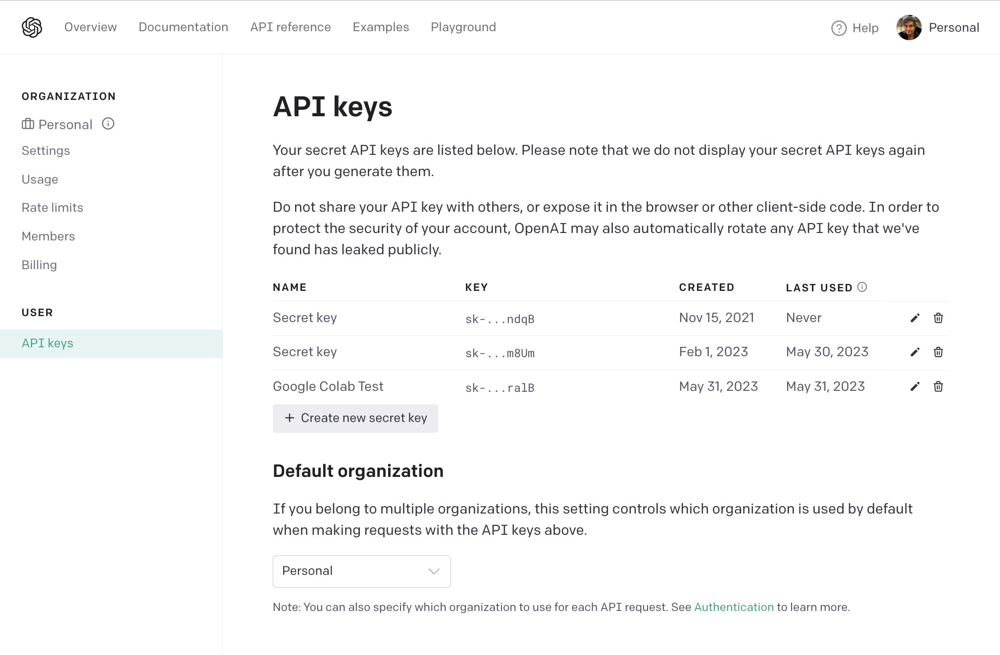

OpenAI API#
The project currently uses the OpenAI API as its LLM backend. This page contains resources and descriptions on how to set up the OpenAI API.
Getting the API key#
To get the API key, go to your OpenAI account’s API keys page. If you don’t have an account, you will be asked to create one.
Currently, the page looks like this:

Click the + Create new secret key button. You will be asked to name the API key. You can name it anything you want. For example, you can name it “llm4data”.
Adding the API key to the project#
After creating the API key, you will be shown the key. Copy the key and add it to the .env file in the project’s root directory. Place the key in the OPENAI_API_KEY variable.
OPENAI_API_KEY=<your-api-key>
Warning
Make sure you keep the API key secure. Do not commit the API key to the repository. Do not share the API key with anyone.
Now, you’re ready to use the API key in the project! 🎉